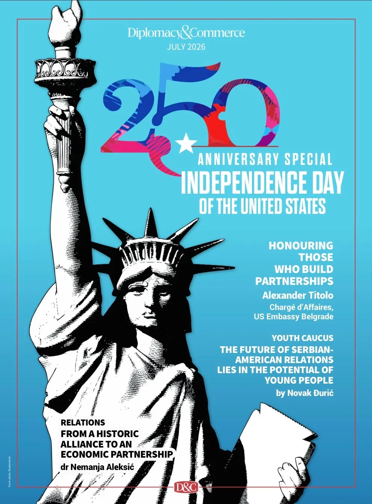
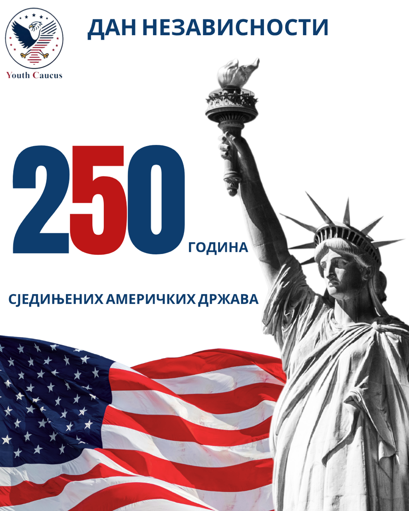
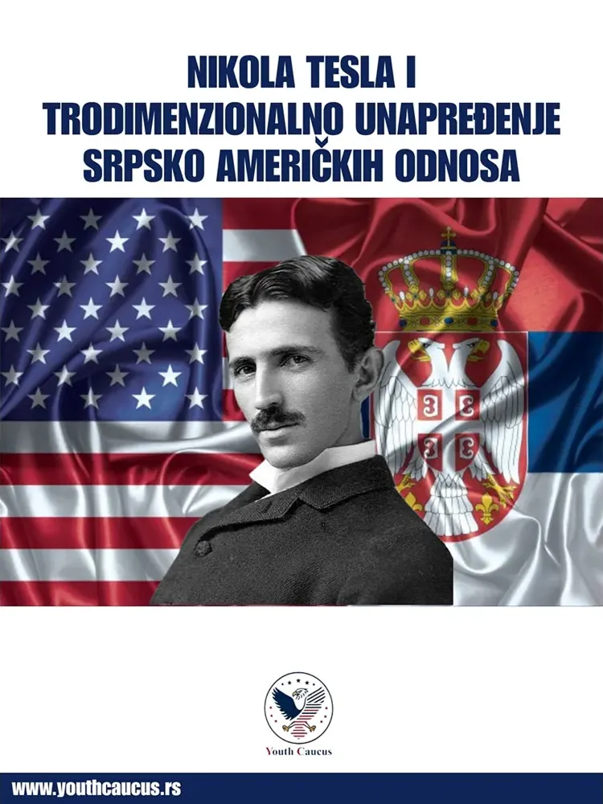
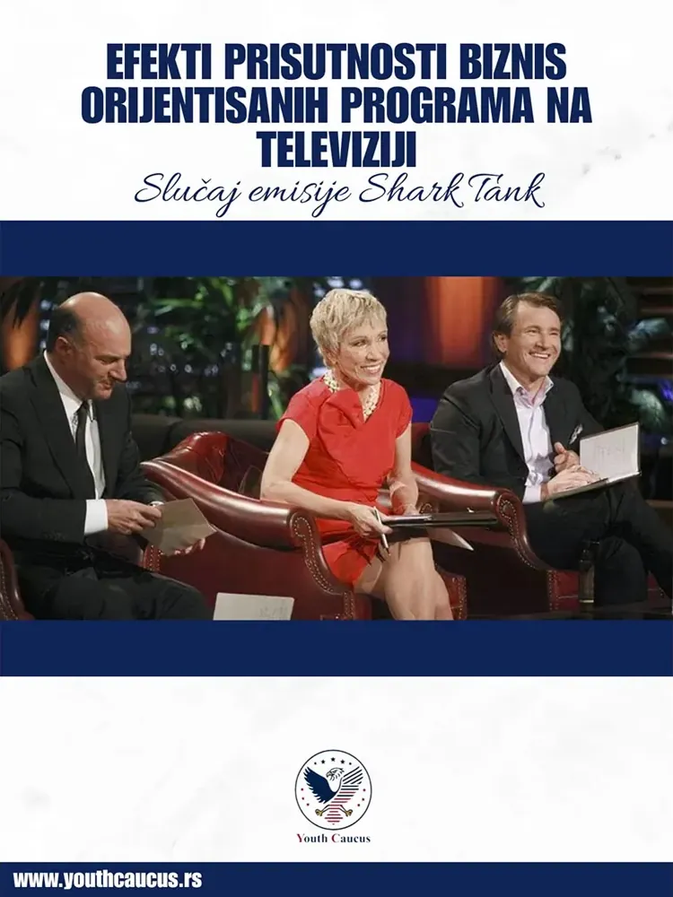
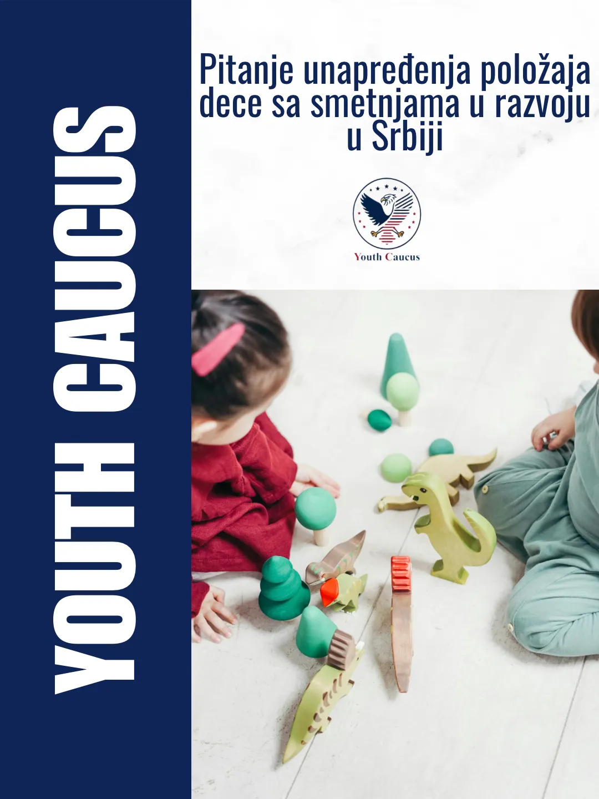
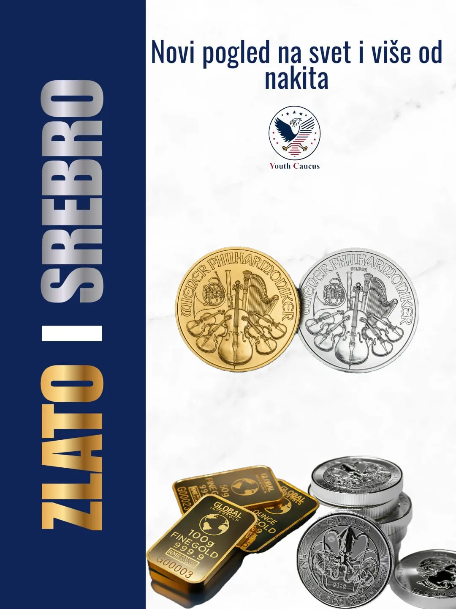
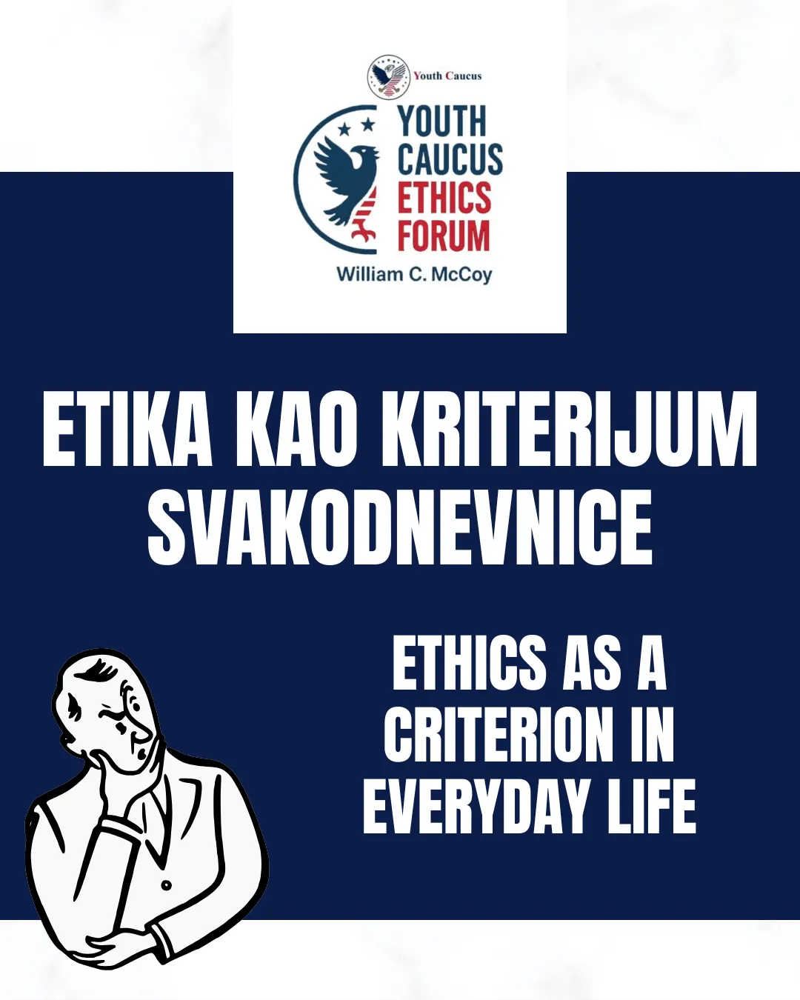
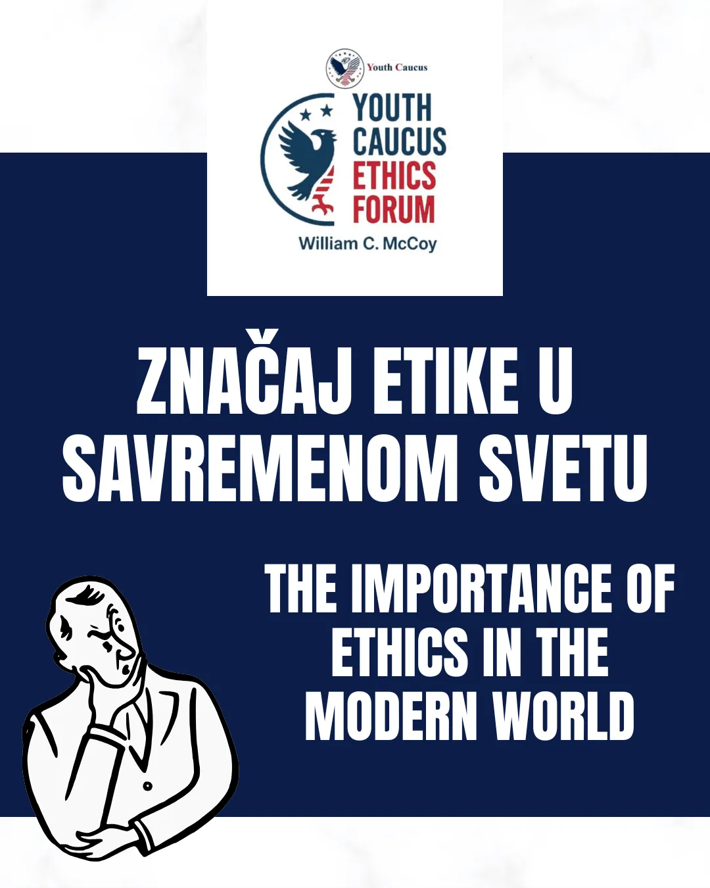
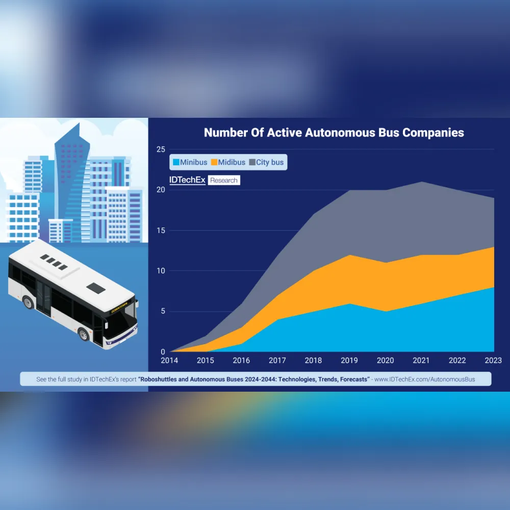

Blog
Akademski radovi i kolumne naših članova i saradnika, ali i drugi materijali od posebne važnosti za misiju Youth Caucusa
-

Specijalno izdanje Diplomacy&Commerce povodom 250 godina nezavisnosti Sjedinjenih Američkih Država
-

Šta pokretanje Strateškog Dijaloga znači za mlade u Srbiji
-

250 godina Sjedinjenih Američkih Država
250 godina Sjedinjenih Američkih Država i osvrt na srpsko-američke odnose i istoriju
-
Vekovi posle Kolumba: Srpski pisci o otkriću Amerike i „otkriće“ Srbije
Pogledi na otkriće Kristofera Kolumba i vizija prijateljstva koja treba živeti kroz vekove.
-

Nikola Tesla i trodimenzionalno unapređenje srpsko-američkih odnosa
Nikola Tesla kao temelj unapređenja srpsko-američkih odnosa
-
250 veličanstvenih – Federalistički spisi, put od konfederacije ka federalnom uređenju
Upoznajte se sa procesom nastajanja temelja modernog državnog uređenja Sjedinjenih Američkih Država.
-

Efekti prisutnosti biznis orijentisanih programa na televiziji - Slučaj emisije Shark Tank
Sve više mladih na našim prostorima odlučuje se za preduzetništvo. Slučajnost i da li se dovoljno mogu edukovati o preduzetnišvu putem medija?
-

Ja neću da umrem, dok njega ne zbrinem - Pitanje unapređenja položaja dece sa smetnjama u razvoju u Srbiji
Unapređenje položaja dece sa smetnjama u razvoju u Srbiji kroz međunarodnu saradnju.
-

Zlato i srebro - Novi pogled na svet i više od nakita
Zlato i srebro nisu samo nakit – otkrij njihovu ulogu u investiranju, finansijskoj pismenosti i savremenoj ekonomiji
-
Milan Nedeljković i MOST: Kratak podsetnik da se mladi iz Srbije podrže u svetu, ali i kod kuće
Podrška mladima iz Srbije u globalnoj i lokalnoj zajednici uz inspiraciju i konkretne ideje
-
Etika u demokratskoj tranziciji
Analiza značaja etičkih principa tokom društvenih i političkih promena u demokratskim sistemima
-

Etika kao kriterijum svakodnevnice
Kako etički standardi oblikuju naše svakodnevne izbore i doprinose odgovornom društvu
-

Značaj etike u savremenom svetu
Isticanje uloge etike u globalnom kontekstu i njenog uticaja na društvene i profesionalne odluke
-

Kako je kompanija NABI prodajom skupljih vozila uspela da bude prodata za cenu ekvivalentnu 8% vrednosti cele industrije?
Analiza poslovne odluke NABI-ja i lekcije o tržišnim strategijama i vrednostima kompanije